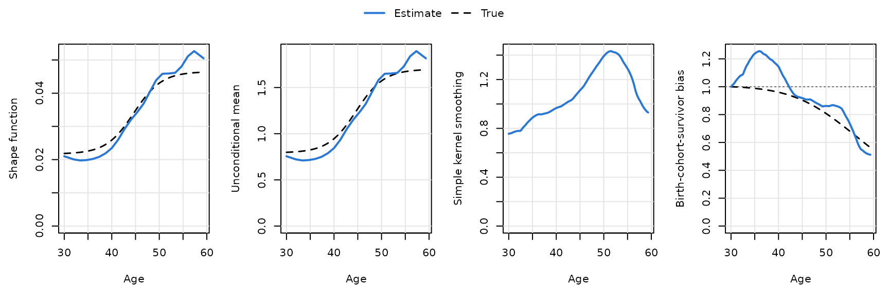
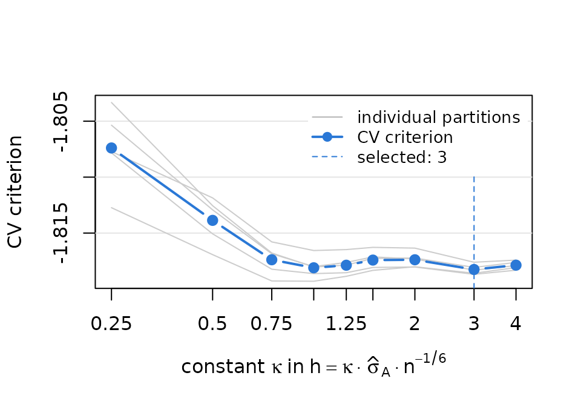
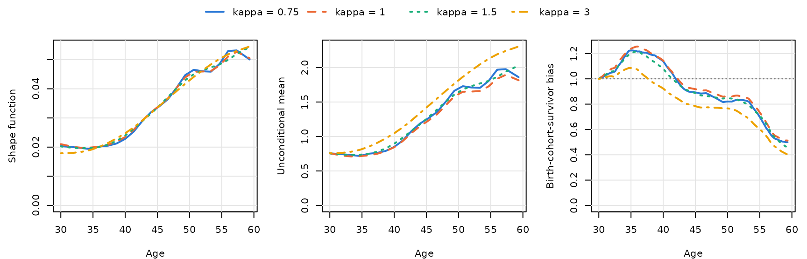
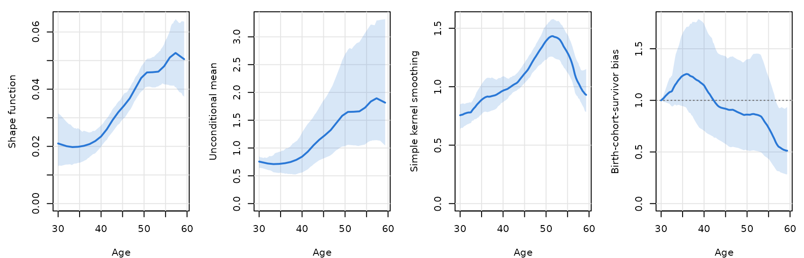
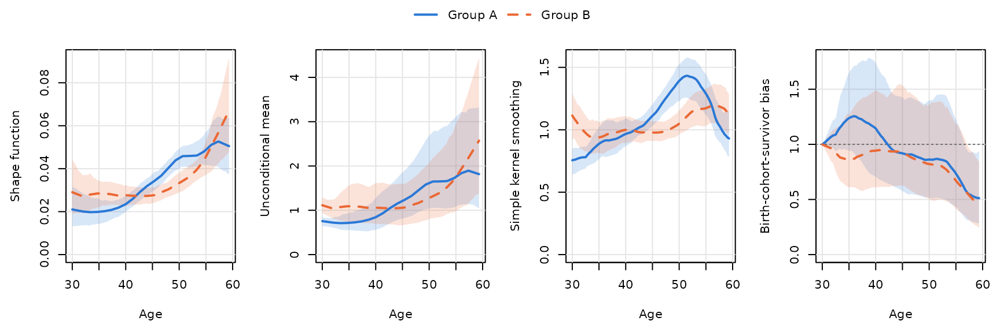
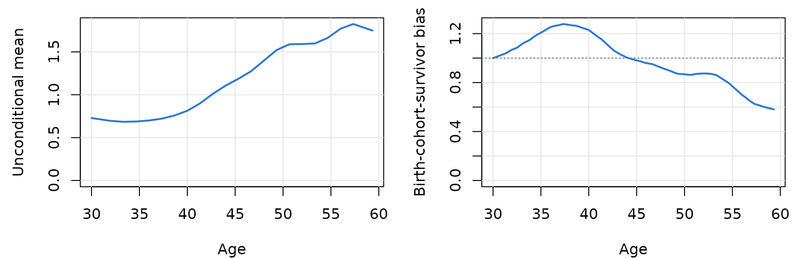

TrajChain estimates population-level biomarker
trajectories from longitudinal cohort studies in which individuals enter
at different ages and are followed until death or dropout. It implements
the nonparametric framework of Hu, Wu, Zhao and Sun (Nonparametric
estimation of marker trajectories in the presence of death and delayed
entry, manuscript under revision at Biometrika). This
vignette explains the estimands and walks through a complete analysis of
a simulated cohort.
Why naive age curves are biased
A common way to summarize how a biomarker changes with age is to smooth the observed measurements against age. In a cohort that enrolls a cross-sectional sample and follows it over time, such a curve mixes three things:
- the age-related change that every individual undergoes;
- survivor bias: at older ages only survivors are observed, and if death is associated with the biomarker through unobserved factors, survivors are a selected group;
- birth-cohort effects: individuals observed at older ages were born earlier. Delayed entry (left truncation) means that the cohorts are sampled differently at each age, so differences between birth cohorts leak into the age curve.
Model and estimands
Let \tau_0 be the starting age of the trajectory (age 30 in the ABC-DS application of the paper); the target population consists of individuals alive at \tau_0. For such an individual let Y^0(t) be the marker at age t, T^0 the age at death and Z^0>0 an unobserved latent variable. The model is
E\{Y^0(t) \mid Z^0, T^0 = s\} = Z^0 f(t), \qquad \tau_0 \le t \le s,
with \int_{\tau_0}^{\tau_1} f(t)\,dt = 1. The shape function f is the common age-related pattern; Z^0 captures individual heterogeneity and may be associated with survival, with the age at study entry (birth cohort) and with dropout, in ways that are left unspecified. Neither survival times nor the reason for dropout need to be observed. Two conditional independence assumptions are needed:
- (A1) the age at entry A^0 is independent of the marker process given Z^0 and the age at death, so birth cohorts may differ only through Z^0;
- (A2) the dropout index C (the last follow-up visit before loss to follow-up for reasons other than death) is independent of the age at death and the marker process given the entry age and Z.
Dropout that depends on the marker values themselves (for example, sicker participants leaving the study) violates (A2).
For individuals entering the study at age t (alive at entry), the mean of the observed marker is
E\{Y(A) \mid A = t\} = \mu_{Z^0}(t)\, f(t), \qquad \mu_{Z^0}(t) = E(Z^0 \mid A^0 = t, T^0 \ge t),
so a naive Nadaraya–Watson curve estimates the shape distorted by
\mu_{Z^0}(t). TrajChain
reports
| Quantity | Formula | Column in fit$curves
|
|---|---|---|
| Shape function | f(t) | shape |
| Unconditional mean | \mu_{Z^0}(\tau_0)\, f(t) | mean_* |
| Birth-cohort-survivor bias | \mu_{Z^0}(t)/\mu_{Z^0}(\tau_0) | bias_* |
| Latent mean among survivors | \mu_{Z^0}(t) | mu_* |
| Simple kernel smoothing | E\{Y(A) \mid A = t\} (baseline) or all visits (pooled) | nw_* |
The unconditional mean is the mean trajectory in the absence of death; with birth-cohort effects it refers to the subgroup whose starting age coincides with the study baseline. The bias curve equals one at \tau_0; values below one mean that survivors entering at age t have a lower latent level than the reference group, i.e. lower marker levels than the reference group would have at the same age.
How f is
identified. For two ages v
apart, under (A1)–(A2) the nuisance factors cancel in the ratio of means
of consecutive measurements, so r(t, t-v) =
f(t)/f(t-v) is estimated by a kernel ratio estimator
(ratio_estimate()). With equally spaced visits these ratios
are chained along the grid u_j = \tau_0 + (j -
0.5)v and normalized to integrate to one (ratio
chaining). With widely or unequally spaced visits,
trajchain() matches all estimable ratios by penalized least
squares.
The data
simcohort is a simulated cohort in long format (one row
per measurement): 600 subjects in two groups, a baseline visit and up to
two follow-up visits every 16 months, with deaths, dropout and
informative delayed entry.
head(simcohort)
#> id group visit age entry_age marker
#> 1 1 A 0 37.1463 37.1463 0.53748
#> 2 1 A 1 38.4796 37.1463 0.68528
#> 3 1 A 2 39.8129 37.1463 0.88437
#> 4 2 A 0 47.7841 47.7841 1.19542
#> 5 2 A 1 49.1174 47.7841 1.00355
#> 6 3 A 0 56.0942 56.0942 0.90858
table(simcohort$group, simcohort$visit)
#>
#> 0 1 2
#> A 300 270 192
#> B 300 263 177trajchain() needs a subject-by-visit matrix
(NA for visits that did not take place), the entry ages and
the scheduled time between visits. visit_matrix() builds
the matrix from long data:
dA <- subset(simcohort, group == "A")
YA <- visit_matrix(dA, id = "id", visit = "visit", value = "marker")
AA <- dA$entry_age[match(rownames(YA), dA$id)]
head(YA, 4)
#> visit_0 visit_1 visit_2
#> 1 0.53748 0.68528 0.88437
#> 2 1.19542 1.00355 NA
#> 3 0.90858 0.92835 0.82075
#> 4 0.81164 0.93762 NAVisits are scheduled every 16 months, so the grid step is v = 16/12 years. We study ages 30 to 59.33, i.e. m = 22 grid points, as in the paper’s analysis.
Fitting the model
fitA <- trajchain(YA, AA, visit_gaps = 16 / 12, tau0 = 30, m = 22)
fitA
#> <TrajChain fit>
#> Shape estimator : ratio chaining (Section 3)
#> Mean estimator : baseline measurements (equation 5)
#> Subjects : 300, with 762 measurements (2.54 per subject)
#> Visit gaps : 1.333, equally spaced (2 follow-up visits)
#> Age interval : [30, 59.33], m = 22 grid points (step 1.333)
#> Bandwidths : h = 2.832 (ratio), h' = 5.48 (mean)
#>
#> age shape mean bias nw
#> 30.00 0.02102 0.7559 1.0000 0.7559
#> 35.87 0.02016 0.7250 1.2547 0.9097
#> 41.73 0.02693 0.9685 1.0310 0.9985
#> 47.60 0.03929 1.4130 0.8901 1.2578
#> 53.47 0.04632 1.6659 0.8329 1.3874
#> 59.33 0.05049 1.8157 0.5123 0.9301The defaults follow the paper: ratio bandwidth h = \hat\sigma_A n^{-1/6}, mean bandwidth
h' = 2.34\,\hat\sigma_A n^{-1/5},
Epanechnikov kernel, and the baseline-measurement estimator of \mu_{Z^0}(t), which remains valid in the
presence of birth-cohort effects. Because simcohort is
simulated, we can add the true curves (dashed) to the plot:
tau <- 22 * 16 / 12
truth_age <- function(shape) {
s <- seq(0, 1, length.out = 201)
tr <- sim_truth(s, shape = shape, truncation = "informative")
data.frame(t = 30 + tau * s, shape = tr$shape / tau, mean = tr$mean, bias = tr$bias)
}
plot(fitA, truth = truth_age("monotone"))
The simple kernel smoothing curve (third panel) rises until about age 52 and then declines, although the underlying shape keeps increasing: survivors at older ages have lower latent levels, which is what the decreasing birth-cohort-survivor bias (fourth panel) quantifies. The estimated shape and unconditional mean recover the increasing trend. The estimated bias shows a bump in the thirties that the true curve does not have; the bootstrap bands below show that this part of the curve is estimated with considerable uncertainty. The bias and the unconditional mean are anchored at age 30, and few subjects enter the study close to that age.
Estimates at particular ages are available from
summary() and predict():
summary(fitA, ages = c(30, 40, 50, 59))$table
#> age shape mean bias nw
#> 1 30 0.02101682 0.7558515 1.0000000 0.7558515
#> 2 40 0.02347536 0.8442709 1.1445659 0.9663231
#> 3 50 0.04488544 1.6142655 0.8620525 1.3915815
#> 4 59 0.05085148 1.8288290 0.5143551 0.9406675
predict(fitA, c(35, 45, 55), type = "mean")
#> [1] 0.717112 1.210540 1.754381Bandwidth: rule of thumb and cross-validation
The constant \kappa in h = \kappa\,\hat\sigma_A n^{-1/6} can be
chosen by five-fold cross-validation with cv_bandwidth().
Its criterion compares, in held-out subjects, consecutive measurements
with the ratio predicted from the training subjects. With small samples,
averaging over several random partitions (n_repeats)
reduces partition noise.
cvA <- cv_bandwidth(YA, AA, visit_gaps = 16 / 12, tau0 = 30, m = 22, n_repeats = 5)
cvA
#> <TrajChain cross-validation: bandwidth constant>
#> 5-fold CV over subjects, 5 partition(s), fold-specific training-fold scale
#> selected constant 3, i.e. h = 3 * sd(A) * n^(-1/6) = 8.497
#>
#> constant cv bandwidth n_dropped
#> 0.25 -1.807 0.7081 0.4
#> 0.50 -1.814 1.4162 0.0
#> 0.75 -1.817 2.1243 0.0
#> 1.00 -1.818 2.8324 0.0
#> 1.25 -1.818 3.5405 0.0
#> 1.50 -1.817 4.2486 0.0
#> 2.00 -1.817 5.6647 0.0
#> 3.00 -1.818 8.4971 0.0
#> 4.00 -1.818 11.3295 0.0
plot(cvA)
Here the criterion is very flat for \kappa \ge 1: the data hardly discriminate between these bandwidths. A useful practice, as in the paper, is to report the rule-of-thumb fit (\kappa = 1) and check the sensitivity of the conclusions to \kappa:
fits_kappa <- lapply(c(0.75, 1, 1.5, cvA$constant), function(k) {
trajchain(YA, AA, 16 / 12, tau0 = 30, m = 22, bandwidth = k * bw_rot(AA))
})
names(fits_kappa) <- paste("kappa =", c(0.75, 1, 1.5, cvA$constant))
plot_trajectories(fits_kappa, which = c("shape", "mean", "bias"))
The shape function is stable across bandwidths. The unconditional mean and the bias curve are anchored at the starting age through \hat\mu_{Z^0}(\tau_0), which divides the kernel smoother at \tau_0 by \hat f(\tau_0), a value extrapolated from the first grid points; they are therefore more sensitive to the bandwidth, as observed in the data analysis of the paper.
Bootstrap confidence bands
trajchain_boot() resamples subjects with replacement and
refits with the bandwidths held fixed, giving pointwise standard errors
and percentile confidence bands for every curve.
bootA <- trajchain_boot(fitA, B = 200, seed = 2026)
summary(bootA, ages = c(35, 45, 55), which = c("shape", "bias"))
#> quantity age estimate se lower upper
#> 1 shape 35 0.01993965 0.002981290 0.01430354 0.02593062
#> 2 shape 45 0.03365964 0.001987395 0.02948446 0.03759251
#> 3 shape 55 0.04878143 0.003826776 0.04161207 0.05711464
#> 4 bias 35 1.23741262 0.193820175 0.94419394 1.64774933
#> 5 bias 45 0.91850415 0.223049734 0.57693722 1.42748648
#> 6 bias 55 0.73491325 0.228378379 0.43286323 1.22625737
plot(bootA)
The bias curve is fixed at one at age 30 by construction, so its band has zero width there. This reflects the normalization rather than precise estimation at age 30: the uncertainty about \hat\mu_{Z^0}(30) shows up in the width of the bias band at later ages and in the band of the unconditional mean.
Comparing groups
Analyses stratified by a grouping variable (sex in the paper) are run
separately and displayed together with
plot_trajectories():
fit_group <- function(g) {
d <- subset(simcohort, group == g)
Y <- visit_matrix(d, id = "id", visit = "visit", value = "marker")
A <- d$entry_age[match(rownames(Y), d$id)]
trajchain(Y, A, visit_gaps = 16 / 12, tau0 = 30, m = 22)
}
bootB <- trajchain_boot(fit_group("B"), B = 200, seed = 2027)
plot_trajectories(list("Group A" = bootA, "Group B" = bootB))
Which estimator of the mean?
Both estimators of \mu_{Z^0}(t) are computed in every fit:
-
mu_method = "baseline"(equation 5 of the paper) smooths the baseline measurements only. It is valid under assumptions (A1)–(A2), which allow the entry age, death and dropout to depend on the latent variable, and therefore allows birth-cohort effects. This is the default and was used for the ABC-DS analysis. -
mu_method = "pooled"(equation 6) pools all observed visits. It requires dropout to be independent of (T, Y, Z) given the entry age (assumption A2’) and approximates \mu_{Z^0}(t) when the visit gaps are small; with birth-cohort effects and wider gaps it mixes subjects who entered at different ages. It was used in the simulation studies of the paper, where there is no birth-cohort effect.
head(fitA$curves[, c("t", "bias_baseline", "bias_pooled")], 3)
#> t bias_baseline bias_pooled
#> 1 30.00000 1.000000 1.000000
#> 2 30.03667 1.001197 1.001007
#> 3 30.07333 1.002389 1.002007
plot(fitA, which = c("mean", "bias"), mu_method = "pooled")
Practical notes
- Scheduled visit times. Visit l of subject i is placed at A_i + v_1 + \dots + v_l, the scheduled time. Small deviations of the actual visit dates are ignored, as in the paper.
-
Monotone dropout. The method assumes that a subject
is observed at visits 0, 1, \dots, C
and not afterwards. If a visit is missing but a later one is observed,
trajchain()warns and uses only pairs of consecutive observed visits. - Undefined ratios. If some grid age has no pair of consecutive visits within one bandwidth, the ratio estimator is undefined there. The chain estimator then stops with an informative error (increase the bandwidth or narrow [\tau_0, \tau_1]); the penalized estimator drops such ratios.
-
Choice of \tau_0.
The unconditional mean and the bias curve are anchored at \tau_0, so \tau_0 should lie well within the range of
entry ages;
trajchain()warns when fewer than 10 subjects enter within one bandwidth h' of \tau_0. -
Unequally or widely spaced visits. Give the vector
of gaps in
visit_gaps(or a finergrid_step);trajchain()then uses the penalized estimator and chooses the penalty by cross-validation. Seevignette("simulation", package = "TrajChain").